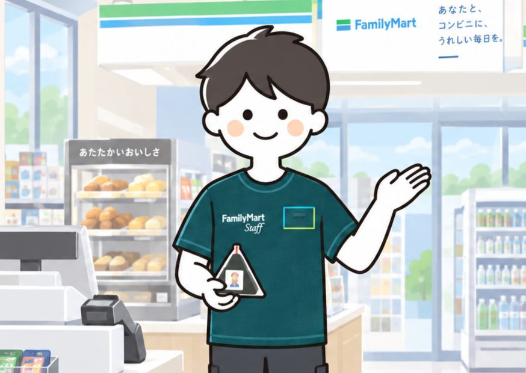
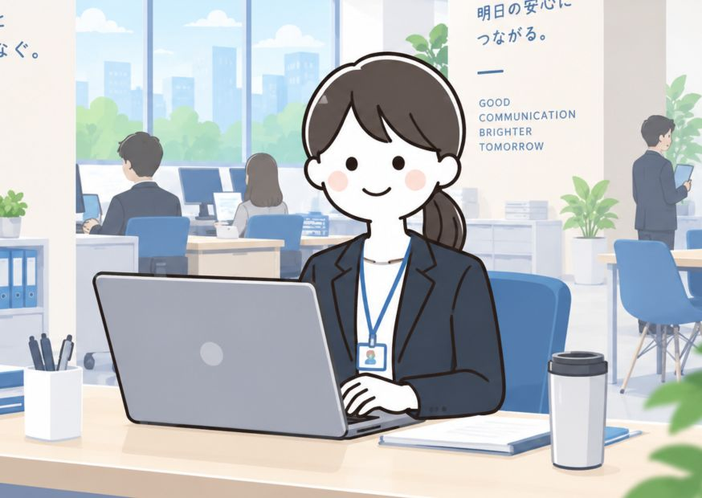
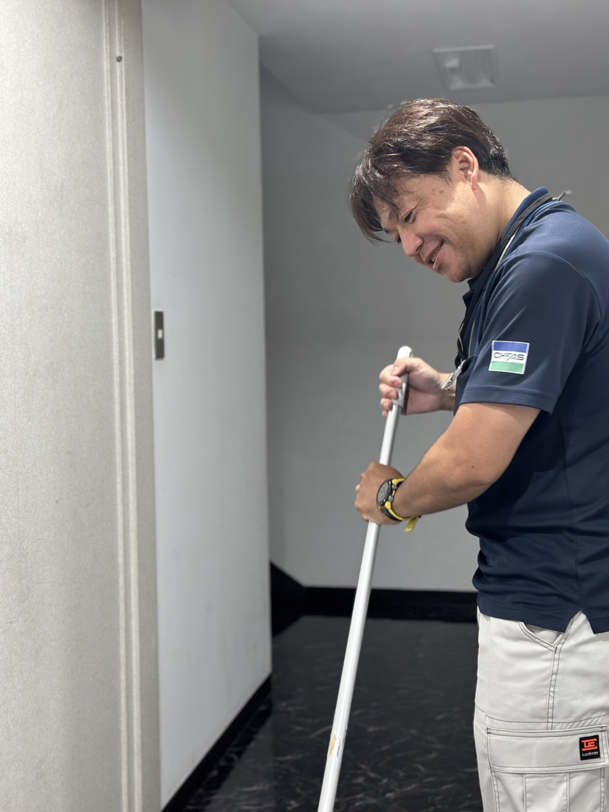
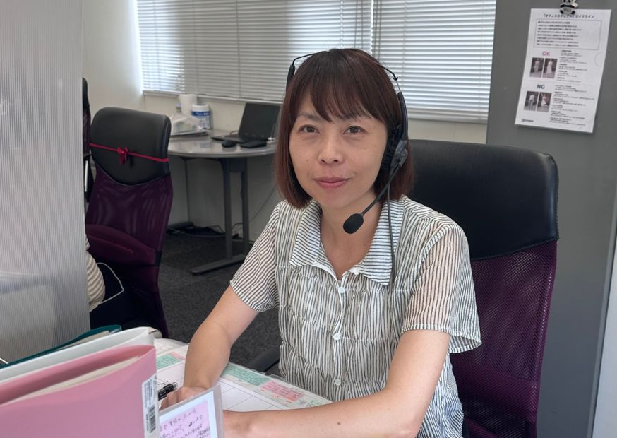
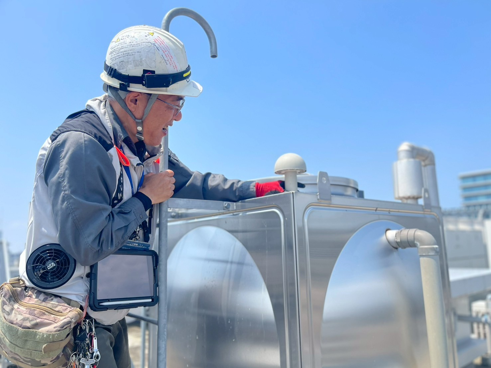
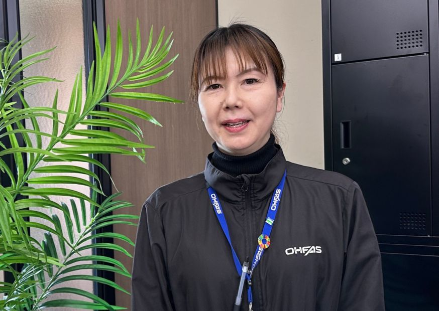
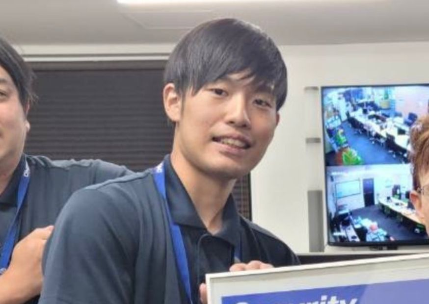

会社を知る
どんな考え方で、どんな仕事をしている会社なのかをご紹介します。
HELLO
FOR YOU
ご紹介をきっかけに出会ったオーファス。会社のこと、仕事のこと、人のこと。気になるところから見てみてください。
どんな考え方で、どんな仕事をしている会社なのかをご紹介します。
清掃・警備・設備管理・電話交換・ファミリーマート・本社など、さまざまな仕事があります。
実際に働くスタッフの言葉から、職場の雰囲気を感じてみてください。
もう少し気になったら、LINEから採用担当と気軽につながれます。
せっかくつながったご縁だから。
ここが、新しい選択肢を知るきっかけになれば。
ABOUT
ABOUT OHFAS
建物を使う人の毎日を、清掃・警備・設備管理などの仕事で支えています。1948年の創業から、地域とお客様とのつながりを大切にしながら歩んできました。
建物を支える仕事から、地域の暮らしに近い仕事、本社から現場を支える仕事まで、さまざまな役割があります。
年代も働き方もさまざま。正社員・パートなど、それぞれの生活に合わせた働き方があります。
1948年の創業から、熊本を中心に建物と人の毎日を支えてきました。
創業
1948年地域とともに歩んできました従業員数
635名OHFASホールディングスグループ全体未経験スタート
80%経験ゼロから始めた人も多数男女比
55%：45%男性/女性平均勤続年数
5年10年以上働いているスタッフも多数在籍雇用形態
30%：70%正社員/パートSTORY
OHFAS STORY
時代に合わせて仕事の幅を広げながら、建物と人を支える役割をつないできました。
熊本市にて大成産業株式会社を設立。オーファスの歴史がスタート
現在のビルメンテナンス事業につながる一歩
オリエンタル警備保障株式会社を設立し、警備事業へ展開
ファミリーマート水前寺2丁目店をオープン。
ビルメンテナンスとセキュリティの統一ブランド「OHFAS」を構築。
OHFASホールディングスを設立し、ホールディングス体制へ移行。大森産業株式会社から「株式会社オーファス」へ社名変更
600名を超える仲間と建物を未来へつなぐ仕事で社会に貢献
仕事は違っても、
支えているのは誰かの日常。
JOBS
OUR JOBS
写真から気になる仕事をのぞいてみてください。クリックすると、その場で仕事内容を詳しく見られます。

05
06PEOPLE
PEOPLE
入社のきっかけも、仕事のやりがいも人それぞれ。写真とスタッフの言葉から、オーファスの日常を感じてみてください。





FLOW
REFERRAL FLOW
紹介をきっかけにオーファスを知って、少し気になったらLINEへ。そこから、まずはカジュアルに話してみる。シンプルな3ステップです。
友人・家族・知人から紹介されて、会社・仕事・働く人を見てみる。
もう少し気になったら、採用担当とLINEで気軽につながる。
仕事内容や働き方について、まずは気軽に話してみる。
KEEP IN TOUCH
仕事内容や働き方など、気になることがあれば採用担当へ。LINEでつながるついてのご相談もLINEからどうぞ。